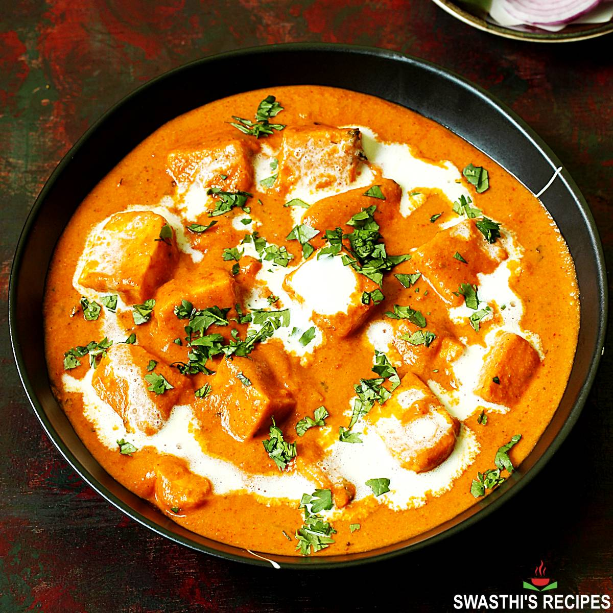

Return Home
Paneer Butter Masala

Description
Paneer Butter Masala, also known as butter paneer is a rich & creamy curry made with paneer, spices, onions,
tomatoes, cashews and butter. As the name denotes, the curry is cooked in butter which imparts it’s
characteristic buttery flavor to the dish.
It is one of the most popular dishes in Indian restaurants similar to kadai paneer, Palak Paneer,
Matar Paneer and Malai Kofta.
Ingredients
- 250g paneer, cubed
- 2 tablespoons butter
- 1 tablespoon oil
- 1 large onion, finely chopped
- 2 tomatoes, pureed
- 1 tablespoon ginger-garlic paste
- 1 teaspoon cumin seeds
Recipie - Follow these steps to make Paneer Butter Masala
- Gather all ingredients.
- Heat oil in a large skillet over medium heat; fry paneer in batches until golden, about 5 minutes.
- Transfer fried paneer to a paper towel-lined plate to drain, retaining vegetable oil in skillet.
- Melt butter in the same skillet over medium heat; cook and stir onion until golden brown, about 10 minutes.
- Add ginger paste and garlic paste. Continue to cook until fragrant, about 1 minute more.
- Stir cashews, ground red chiles, cumin, coriander, and garam masala into the onion mixture.
Cook and stir for 1 minute.
- Stir tomato sauce, half-and-half, milk, sugar, and salt into spice mixture; simmer until thickened,
about 5 minutes.
- Reduce heat to low. Add fried paneer and simmer until heated through, about 5 minutes more.